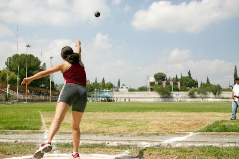

Información de bala y disco
Descripción
Lanzamientos de bala y disco ambas ramas.
Categorías
- Junior (hasta 45 A)
- Master (45 en adelante)
Reglamento
Lanzamiento de Bala
- El implemento debe ser una esfera metálica (bala) de acuerdo con la categoría y género del atleta.
- El lanzamiento se realiza desde un círculo de 2.135 m de diámetro.
- El atleta debe iniciar el lanzamiento desde una posición estática dentro del círculo.
- La bala debe apoyarse contra el cuello y mantenerse allí durante todo el movimiento.
- Solo se permite "empujar" la bala, no lanzarla como si fuera una pelota.
- El lanzamiento se considera válido si la bala cae dentro del sector de 34.92°.
- El atleta no debe pisar fuera del círculo ni salir por el frente del área de lanzamiento.
Lanzamiento de Disco
- El disco debe tener el peso y tamaño correspondiente según la categoría y género del atleta.
- El lanzamiento se efectúa desde un círculo de 2.50 m de diámetro.
- El atleta puede girar dentro del círculo para tomar impulso, pero no puede salirse de este.
- El disco debe ser lanzado con una técnica de giro y debe caer dentro del sector de 34.92°.
- Se permite el uso de guantes, pero no de sustancias que mejoren el agarre (como resina).
- El intento es inválido si el atleta pisa fuera del círculo o el disco cae fuera del sector permitido.
Reglas Comunes
- Cada atleta tiene un número determinado de intentos (generalmente 3 a 6).
- Se considera válido solo el mejor lanzamiento de cada atleta para el ranking final.
- Los jueces deben medir desde el borde más cercano donde impactó el implemento hasta el borde interior del círculo, en línea recta.
- Todos los lanzamientos deben ser supervisados por jueces certificados.